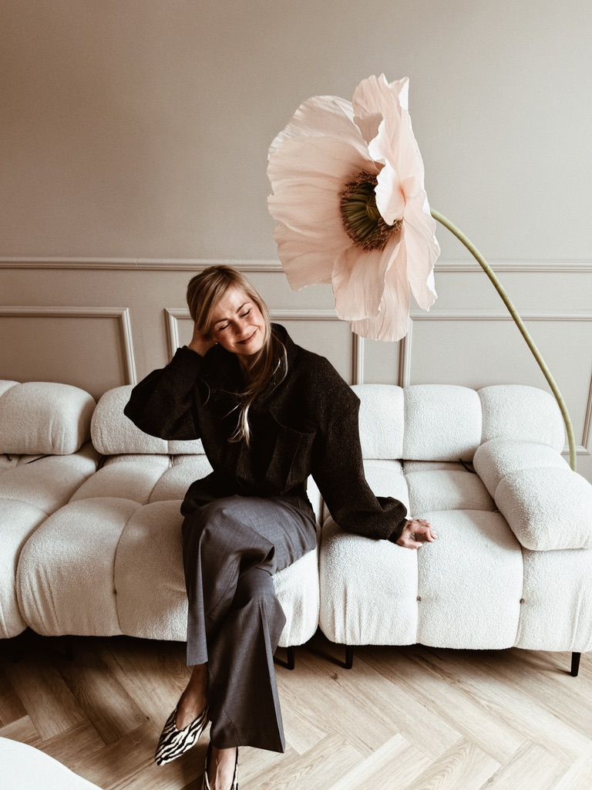

Każda dobra współpraca zaczyna się od rozmowy. Jeśli szukasz stylistki do programu telewizyjnego, podcastu, kampanii lub wydarzenia — chętnie poznam Twój pomysł. Nie wierzę w przypadkowe spotkania. Wierzę w wspólne tworzenie wartości.
Start a ConversationPodcast. Wywiad. Panel dyskusyjny. Najlepsze rozmowy powstają wtedy, gdy można mówić szczerze. Jestem otwarta na formaty audio i video.
Invite Me
Moda to nie tylko ubrania. To komunikacja, psychologia i sposób budowania własnej historii. Uwielbiam opowiadać o tym w mediach — lekko, konkretnie i z perspektywy praktyka.
Discover My PerspectiveLet's create somethingpeople remember.
Dobra współpraca nie kończy się na publikacji. Najlepsze projekty powstają wtedy, gdy marka i twórca mają wspólny cel. Tworzę materiały, które wyglądają elegancko, brzmią naturalnie i pozostają w pamięci odbiorców. Zależy mi nie tylko na estetyce, ale przede wszystkim na tym, by każda współpraca była wiarygodna i wartościowa.
Tworzenie materiałów dla marek modowych, beauty i lifestyle — od pierwszego pomysłu po gotową publikację.
Komentarze eksperckie, rozmowy i wystąpienia dotyczące stylu, budowania wizerunku oraz świadomej mody.
Konferencje, premiery, pokazy mody i wydarzenia, podczas których moda staje się początkiem inspirującej rozmowy.